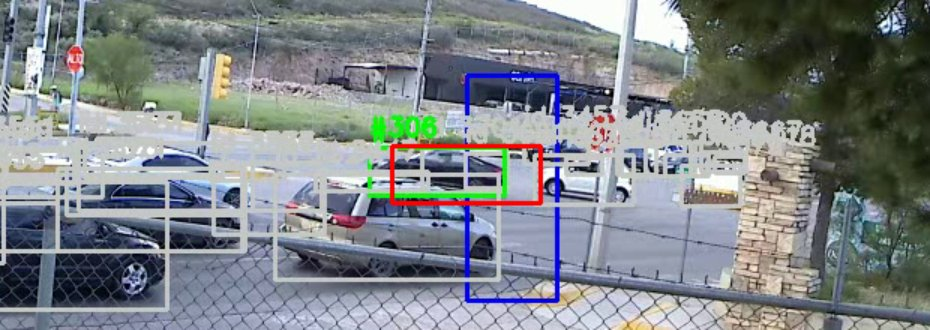
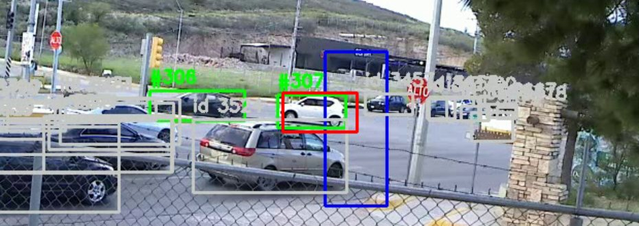
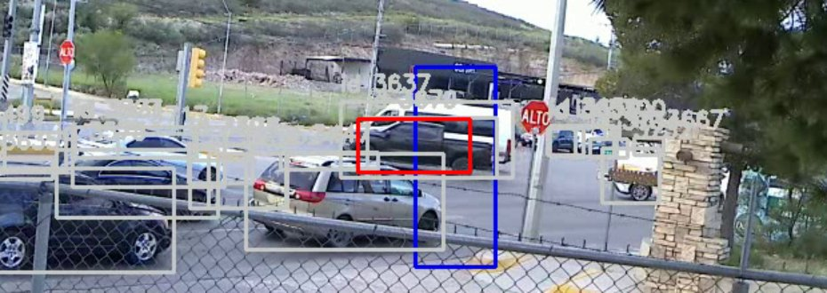
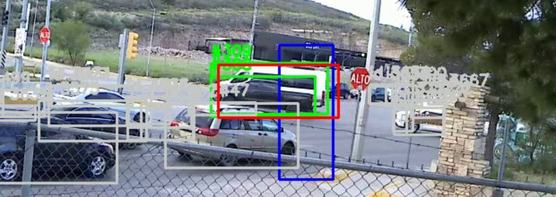
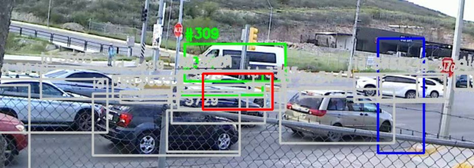
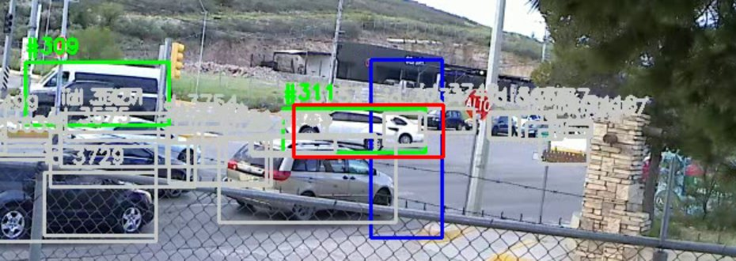
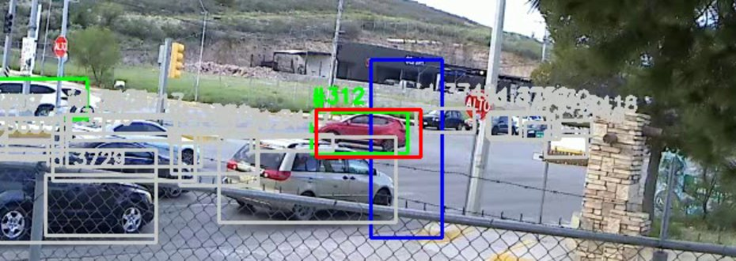

#1 · 0.6 s · izq -> der · car · id 1

#2 · 2.2 s · der -> izq · car · id 46

#3 · 2.4 s · izq -> der · car · id 31

#4 · 2.9 s · der -> izq · car · id 55

#5 · 3.9 s · der -> izq · car · id 37

#6 · 4.2 s · der -> izq · car · id 62

#7 · 5.1 s · izq -> der · car · id 23

#8 · 6.7 s · der -> izq · car · id 63

#9 · 7.2 s · izq -> der · car · id 101

#10 · 8.8 s · izq -> der · car · id 98

#11 · 12.1 s · der -> izq · car · id 144

#12 · 12.4 s · izq -> der · car · id 127

#13 · 16.0 s · izq -> der · car · id 188

#14 · 16.1 s · izq -> der · car · id 159

#15 · 16.3 s · der -> izq · car · id 194

#16 · 17.3 s · izq -> der · car · id 207

#17 · 17.3 s · izq -> der · car · id 203

#18 · 18.4 s · izq -> der · truck · id 206

#19 · 18.5 s · der -> izq · car · id 259

#20 · 19.2 s · der -> izq · car · id 255

#21 · 19.6 s · der -> izq · car · id 288

#22 · 21.2 s · der -> izq · car · id 305

#23 · 22.1 s · der -> izq · car · id 193

#24 · 23.8 s · der -> izq · car · id 354

#25 · 23.9 s · izq -> der · car · id 292

#26 · 25.7 s · der -> izq · car · id 307

#27 · 27.9 s · der -> izq · car · id 384

#28 · 28.7 s · der -> izq · car · id 395

#29 · 29.1 s · der -> izq · car · id 396

#30 · 30.5 s · der -> izq · car · id 213

#31 · 31.0 s · der -> izq · car · id 264

#32 · 32.2 s · der -> izq · car · id 230

#33 · 33.3 s · der -> izq · car · id 271

#34 · 34.2 s · izq -> der · car · id 401

#35 · 34.6 s · der -> izq · car · id 434

#36 · 37.1 s · izq -> der · car · id 454

#37 · 40.4 s · izq -> der · car · id 498

#38 · 50.1 s · der -> izq · car · id 556

#39 · 51.3 s · der -> izq · car · id 604

#40 · 52.8 s · der -> izq · truck · id 565

#41 · 53.4 s · der -> izq · truck · id 583

#42 · 56.7 s · der -> izq · car · id 612

#43 · 57.7 s · der -> izq · car · id 713

#44 · 59.5 s · der -> izq · car · id 721

#45 · 60.8 s · der -> izq · car · id 739

#46 · 61.5 s · der -> izq · car · id 742

#47 · 72.1 s · der -> izq · car · id 777 posible doble

#48 · 72.3 s · der -> izq · car · id 773 posible doble

#49 · 76.7 s · izq -> der · car · id 692

#50 · 76.9 s · izq -> der · car · id 613

#51 · 78.2 s · izq -> der · car · id 534

#52 · 78.6 s · izq -> der · truck · id 637

#53 · 78.6 s · izq -> der · car · id 821

#54 · 78.6 s · izq -> der · car · id 656

#55 · 78.8 s · izq -> der · car · id 653

#56 · 78.8 s · izq -> der · car · id 589

#57 · 79.8 s · izq -> der · car · id 608

#58 · 80.3 s · izq -> der · car · id 811

#59 · 80.4 s · izq -> der · car · id 594

#60 · 82.8 s · izq -> der · car · id 735

#61 · 83.0 s · izq -> der · car · id 882

#62 · 83.7 s · izq -> der · car · id 890

#63 · 84.1 s · izq -> der · car · id 786

#64 · 84.1 s · izq -> der · car · id 870

#65 · 85.0 s · izq -> der · car · id 953

#66 · 85.0 s · izq -> der · car · id 943

#67 · 85.1 s · izq -> der · car · id 898

#68 · 85.1 s · izq -> der · car · id 856

#69 · 85.2 s · izq -> der · car · id 767

#70 · 85.3 s · izq -> der · car · id 933

#71 · 85.3 s · izq -> der · car · id 905

#72 · 85.6 s · der -> izq · car · id 851

#73 · 86.2 s · izq -> der · car · id 915

#74 · 86.6 s · izq -> der · car · id 956

#75 · 86.7 s · izq -> der · car · id 984

#76 · 86.9 s · izq -> der · car · id 944

#77 · 87.0 s · izq -> der · car · id 865

#78 · 87.1 s · der -> izq · car · id 1006

#79 · 88.6 s · izq -> der · truck · id 1003

#80 · 89.2 s · izq -> der · car · id 1035

#81 · 89.2 s · izq -> der · car · id 950

#82 · 89.3 s · izq -> der · car · id 949

#83 · 89.4 s · izq -> der · car · id 991

#84 · 89.7 s · der -> izq · car · id 847

#85 · 90.4 s · izq -> der · car · id 1040

#86 · 90.6 s · der -> izq · car · id 1067

#87 · 90.8 s · izq -> der · car · id 1111

#88 · 90.9 s · izq -> der · car · id 1081

#89 · 91.1 s · izq -> der · truck · id 1066

#90 · 91.3 s · der -> izq · car · id 1101

#91 · 93.1 s · izq -> der · car · id 962

#92 · 93.4 s · der -> izq · car · id 1028

#93 · 93.5 s · izq -> der · car · id 965

#94 · 93.7 s · izq -> der · car · id 1131

#95 · 94.0 s · izq -> der · car · id 970

#96 · 94.9 s · izq -> der · car · id 1075

#97 · 95.5 s · der -> izq · car · id 1193 posible doble

#98 · 95.8 s · der -> izq · truck · id 1178 posible doble

#99 · 96.1 s · izq -> der · car · id 1171

#100 · 96.2 s · izq -> der · car · id 1045

#101 · 96.3 s · der -> izq · car · id 1208

#102 · 96.3 s · izq -> der · car · id 1034

#103 · 96.6 s · izq -> der · car · id 1225

#104 · 96.7 s · izq -> der · car · id 924

#105 · 97.5 s · izq -> der · car · id 1207

#106 · 97.6 s · der -> izq · car · id 1246

#107 · 98.6 s · der -> izq · car · id 1261

#108 · 98.8 s · izq -> der · car · id 1151

#109 · 100.0 s · izq -> der · car · id 1265

#110 · 100.3 s · der -> izq · car · id 1180

#111 · 100.7 s · der -> izq · car · id 930

#112 · 102.1 s · izq -> der · truck · id 1286

#113 · 102.2 s · der -> izq · car · id 1239 posible doble

#114 · 102.4 s · izq -> der · car · id 1285

#115 · 102.5 s · der -> izq · car · id 876 posible doble

#116 · 103.3 s · der -> izq · car · id 1250

#117 · 103.6 s · izq -> der · car · id 1342

#118 · 103.6 s · izq -> der · truck · id 1314

#119 · 104.2 s · der -> izq · car · id 1251

#120 · 104.7 s · der -> izq · car · id 1320

#121 · 105.3 s · izq -> der · car · id 1323

#122 · 105.9 s · der -> izq · car · id 1366

#123 · 107.6 s · der -> izq · car · id 1400

#124 · 109.2 s · izq -> der · car · id 1383

#125 · 109.7 s · der -> izq · car · id 1378

#126 · 110.5 s · izq -> der · car · id 1424

#127 · 110.7 s · izq -> der · car · id 1380

#128 · 110.8 s · der -> izq · car · id 1422

#129 · 111.7 s · izq -> der · car · id 1432

#130 · 111.9 s · der -> izq · car · id 1441

#131 · 114.1 s · der -> izq · car · id 1488

#132 · 114.3 s · izq -> der · car · id 1464

#133 · 114.8 s · der -> izq · car · id 1490

#134 · 116.3 s · der -> izq · car · id 1416 posible doble

#135 · 116.6 s · der -> izq · car · id 1297 posible doble

#136 · 118.0 s · der -> izq · car · id 1511

#137 · 119.5 s · der -> izq · car · id 1517

#138 · 120.2 s · der -> izq · car · id 1519

#139 · 121.4 s · izq -> der · car · id 1552

#140 · 121.5 s · izq -> der · car · id 1524

#141 · 121.7 s · izq -> der · car · id 1510

#142 · 122.8 s · der -> izq · car · id 1512

#143 · 123.1 s · izq -> der · car · id 1534

#144 · 124.1 s · der -> izq · truck · id 1604

#145 · 125.0 s · izq -> der · car · id 1600

#146 · 126.3 s · der -> izq · car · id 1634

#147 · 126.8 s · izq -> der · car · id 1532

#148 · 127.9 s · der -> izq · car · id 1608

#149 · 128.4 s · izq -> der · car · id 1648

#150 · 128.5 s · der -> izq · truck · id 1672

#151 · 129.3 s · der -> izq · car · id 1249

#152 · 129.9 s · izq -> der · car · id 1670

#153 · 130.3 s · izq -> der · car · id 1680

#154 · 130.9 s · der -> izq · car · id 1664 posible doble

#155 · 131.0 s · der -> izq · car · id 1476 posible doble

#156 · 132.0 s · izq -> der · car · id 1687

#157 · 132.9 s · der -> izq · car · id 1733 posible doble

#158 · 133.2 s · der -> izq · car · id 1642 posible doble

#159 · 134.9 s · izq -> der · car · id 1570

#160 · 136.5 s · izq -> der · car · id 1737

#161 · 141.4 s · der -> izq · car · id 1818

#162 · 142.4 s · der -> izq · car · id 1821

#163 · 143.3 s · der -> izq · car · id 1829

#164 · 143.7 s · der -> izq · car · id 1770

#165 · 145.3 s · der -> izq · car · id 1845

#166 · 146.8 s · der -> izq · car · id 1859

#167 · 147.4 s · der -> izq · car · id 1814

#168 · 151.1 s · der -> izq · car · id 1910

#169 · 152.7 s · der -> izq · car · id 1921

#170 · 154.3 s · der -> izq · car · id 1920

#171 · 162.9 s · izq -> der · car · id 1778

#172 · 163.2 s · izq -> der · car · id 1902

#173 · 163.4 s · izq -> der · truck · id 1962

#174 · 169.6 s · izq -> der · car · id 2001

#175 · 170.1 s · der -> izq · car · id 2077

#176 · 170.4 s · der -> izq · truck · id 2080

#177 · 172.5 s · der -> izq · car · id 2069

#178 · 173.6 s · der -> izq · car · id 2105 posible doble

#179 · 173.7 s · der -> izq · car · id 2092 posible doble

#180 · 175.2 s · der -> izq · car · id 2112

#181 · 176.1 s · der -> izq · car · id 2120

#182 · 176.7 s · der -> izq · car · id 2097

#183 · 178.2 s · der -> izq · car · id 2103

#184 · 178.6 s · der -> izq · car · id 2139

#185 · 180.3 s · der -> izq · car · id 2150

#186 · 184.4 s · der -> izq · car · id 2240

#187 · 194.0 s · izq -> der · motorcycle · id 2037

#188 · 197.2 s · izq -> der · car · id 2065

#189 · 197.7 s · izq -> der · car · id 2318

#190 · 197.9 s · izq -> der · car · id 1997

#191 · 198.8 s · izq -> der · car · id 1888

#192 · 200.1 s · izq -> der · car · id 2425

#193 · 200.1 s · izq -> der · car · id 2030

#194 · 200.3 s · izq -> der · car · id 2306

#195 · 200.3 s · izq -> der · car · id 2190

#196 · 200.5 s · izq -> der · car · id 2394

#197 · 200.6 s · izq -> der · truck · id 2336

#198 · 200.6 s · izq -> der · car · id 2170

#199 · 202.4 s · izq -> der · car · id 2401

#200 · 202.7 s · izq -> der · car · id 2329

#201 · 203.1 s · izq -> der · truck · id 2458

#202 · 203.2 s · izq -> der · car · id 2375

#203 · 203.3 s · izq -> der · car · id 2436

#204 · 204.1 s · izq -> der · car · id 2456

#205 · 204.3 s · izq -> der · car · id 2454

#206 · 204.5 s · izq -> der · car · id 2498

#207 · 204.5 s · izq -> der · car · id 2487

#208 · 204.5 s · izq -> der · car · id 2421

#209 · 206.3 s · izq -> der · car · id 2500

#210 · 206.3 s · der -> izq · car · id 2113

#211 · 206.9 s · izq -> der · car · id 2518

#212 · 207.8 s · der -> izq · car · id 2551

#213 · 207.9 s · izq -> der · car · id 2466

#214 · 209.0 s · izq -> der · car · id 2537

#215 · 209.9 s · der -> izq · car · id 2527

#216 · 210.2 s · izq -> der · car · id 2553

#217 · 210.9 s · der -> izq · car · id 2415

#218 · 211.9 s · izq -> der · car · id 2624

#219 · 211.9 s · izq -> der · car · id 2591

#220 · 212.3 s · der -> izq · car · id 2409

#221 · 212.4 s · izq -> der · car · id 2562

#222 · 213.0 s · der -> izq · car · id 2585

#223 · 213.6 s · izq -> der · car · id 2597

#224 · 214.2 s · der -> izq · car · id 2653

#225 · 215.1 s · der -> izq · car · id 2670

#226 · 215.8 s · izq -> der · car · id 2644

#227 · 216.7 s · der -> izq · car · id 2631

#228 · 217.1 s · der -> izq · car · id 2606

#229 · 218.5 s · der -> izq · car · id 2677

#230 · 219.0 s · der -> izq · car · id 2657

#231 · 219.4 s · der -> izq · car · id 2704

#232 · 219.4 s · izq -> der · car · id 2699

#233 · 219.7 s · izq -> der · car · id 2689

#234 · 220.2 s · izq -> der · car · id 2720

#235 · 220.5 s · der -> izq · car · id 2474

#236 · 222.3 s · der -> izq · car · id 2739

#237 · 222.4 s · izq -> der · car · id 2763

#238 · 222.9 s · der -> izq · car · id 2749

#239 · 223.2 s · izq -> der · car · id 2768

#240 · 223.9 s · der -> izq · car · id 2794 posible doble

#241 · 224.1 s · der -> izq · car · id 2758 posible doble

#242 · 225.4 s · der -> izq · car · id 2738 posible doble

#243 · 225.7 s · der -> izq · car · id 2662 posible doble

#244 · 225.8 s · izq -> der · car · id 2701

#245 · 226.4 s · der -> izq · car · id 2821

#246 · 226.9 s · der -> izq · car · id 2806

#247 · 227.0 s · izq -> der · car · id 2827

#248 · 227.9 s · der -> izq · car · id 2854

#249 · 228.4 s · izq -> der · car · id 2828

#250 · 229.2 s · der -> izq · car · id 2838

#251 · 229.5 s · der -> izq · car · id 2797 posible doble

#252 · 229.7 s · der -> izq · car · id 2633 posible doble

#253 · 230.4 s · izq -> der · car · id 2887

#254 · 230.4 s · izq -> der · car · id 2767

#255 · 230.9 s · der -> izq · car · id 2870 posible doble

#256 · 231.2 s · der -> izq · car · id 2800 posible doble

#257 · 232.0 s · izq -> der · car · id 2891

#258 · 232.1 s · der -> izq · car · id 2873

#259 · 232.7 s · der -> izq · car · id 2922

#260 · 232.7 s · izq -> der · car · id 2908

#261 · 233.9 s · der -> izq · car · id 2932 posible doble

#262 · 234.2 s · der -> izq · car · id 2862 posible doble

#263 · 235.4 s · der -> izq · car · id 2792 posible doble

#264 · 235.6 s · der -> izq · car · id 2925 posible doble

#265 · 235.7 s · izq -> der · motorcycle · id 2987

#266 · 235.7 s · izq -> der · car · id 2949

#267 · 236.1 s · izq -> der · truck · id 2978

#268 · 236.7 s · der -> izq · car · id 2863

#269 · 237.3 s · der -> izq · car · id 2931

#270 · 238.0 s · der -> izq · car · id 2942

#271 · 238.5 s · der -> izq · car · id 3004

#272 · 238.6 s · izq -> der · car · id 2961

#273 · 239.8 s · der -> izq · car · id 2939 posible doble

#274 · 240.0 s · der -> izq · car · id 3008 posible doble

#275 · 240.3 s · izq -> der · car · id 3030

#276 · 240.4 s · izq -> der · car · id 3037

#277 · 240.4 s · izq -> der · car · id 3046

#278 · 241.1 s · der -> izq · car · id 2921

#279 · 241.4 s · izq -> der · car · id 3054

#280 · 241.5 s · izq -> der · car · id 3031

#281 · 242.5 s · der -> izq · car · id 2789

#282 · 245.2 s · izq -> der · car · id 3086

#283 · 245.3 s · izq -> der · car · id 3124

#284 · 248.3 s · der -> izq · car · id 3158

#285 · 248.9 s · der -> izq · car · id 3115

#286 · 249.6 s · der -> izq · car · id 3179

#287 · 252.1 s · izq -> der · truck · id 3165

#288 · 253.1 s · izq -> der · truck · id 3192

#289 · 253.3 s · der -> izq · car · id 3300

#290 · 253.5 s · izq -> der · car · id 3216

#291 · 254.3 s · izq -> der · car · id 3297

#292 · 254.7 s · izq -> der · car · id 3170

#293 · 254.8 s · izq -> der · truck · id 3175

#294 · 256.9 s · der -> izq · car · id 3357

#295 · 257.4 s · der -> izq · car · id 3365

#296 · 257.7 s · izq -> der · car · id 3348

#297 · 260.2 s · der -> izq · car · id 3359

#298 · 260.2 s · izq -> der · car · id 3371

#299 · 260.7 s · der -> izq · car · id 3361 posible doble

#300 · 260.9 s · der -> izq · car · id 3403 posible doble

#301 · 264.5 s · der -> izq · car · id 3424

#302 · 266.0 s · der -> izq · car · id 3458

#303 · 271.3 s · der -> izq · car · id 3487

#304 · 272.4 s · der -> izq · car · id 3530

#305 · 273.7 s · der -> izq · car · id 3560

#306 · 289.9 s · der -> izq · car · id 3673

#307 · 290.6 s · der -> izq · car · id 3676

#308 · 294.5 s · der -> izq · car · id 3730 posible doble

#309 · 294.7 s · der -> izq · car · id 3637 posible doble

#310 · 296.3 s · der -> izq · car · id 3727

#311 · 296.7 s · der -> izq · car · id 3736

#312 · 299.0 s · der -> izq · car · id 3746